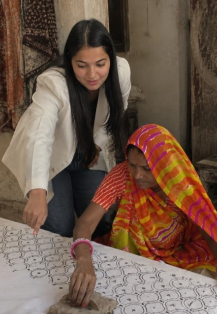
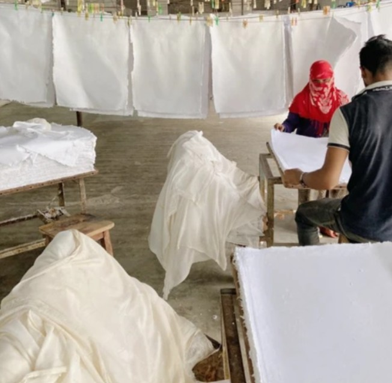

Daffodil Studio sources rare textures and material traditions from Jaipur's finest ateliers - cotton papers with the weight of history, and textiles carrying generations of hand.

Daffodil Studio began with a question that wouldn't leave founder Sara Khandelwal alone: why did the things she owned so rarely feel like they were made for her, with care, with time, with intention?
She found her answer in Jaipur, among artisans who measure their work in seasons, not shipments. What began as one person's question has become something larger than any one of us - a small, devoted community of printers, quilters, weavers, and papermakers, each lending their hand to what we make together.
At Daffodil Studio, we are not a marketplace of goods. We are a considered introduction between two worlds that were always meant to meet and every piece that reaches you carries all of our hands, not just one.
We work across circular materials, textile craft, and contemporary design to create objects and develop materials for people and organizations looking for something beyond the conventional.
"You are special and the materials you surround yourself with should be special too."
This belief shapes everything we bring forward: the structural weight of true cotton paper, the depth only hand-guided indigo can achieve, the quiet permanence of a Kantha stitch laid by hand. Every piece carries time inside it.

Paper with a soul, and a second life.
Every year, textile production leaves behind enormous amounts of material offcuts, remnants, and fibers that have already been through one production cycle.We work with cotton textile waste and remnants, redirecting this material into a new form: paper.
Instead of allowing textile material to end its useful life as waste, we give it another purpose as stationery designed for everyday use.
To see our whole collection, email us or send an inquiry.
History, woven and stamped into cloth.
Kantha is a textile carrying stories from generations, a canvas that literalizes history, one hand-laid stitch at a time, passed from grandmother to daughter across seasons of quiet work.
Block printing is a meticulous master art form of rhythm, pressure, and living ink - a single motif pressed by hand, again and again, until the pattern breathes.
Layers of worn, gathered cloth are laid flat and stitched by hand in fine, running lines - the same technique women in Bengal have used for generations to turn old saris into something new. There is no pattern drawn beforehand; the maker's hand decides as she goes, so no two pieces of Kantha are ever quite the same.
A motif begins as a hand-carved wood block, sometimes decades old, passed between printers as an inheritance of skill. Dipped in natural, botanical dye and pressed onto cloth stamp by stamp, the pattern takes shape slowly, a discipline of rhythm and pressure that no machine has managed to replicate.
To see our whole collection, email us or send an inquiry.
A family workshop carrying five generations of hand-block printing, working with wood blocks carved by their own hands and dyes drawn from indigo, madder, and turmeric.
A collective of women artisans who learned the running stitch from their mothers, and now pass it forward, turning reclaimed cloth into something entirely new.
Working entirely by hand, transforming reclaimed cotton waste into paper with a weight and texture no mill can replicate.
Daffodil Studio partners with boutiques, institutions, and design-led companies seeking sourcing with real provenance, from curated ready collections to fully custom, design-your-own commissions.
Tell us what you're building, and we'll bring Jaipur's ateliers to the table.